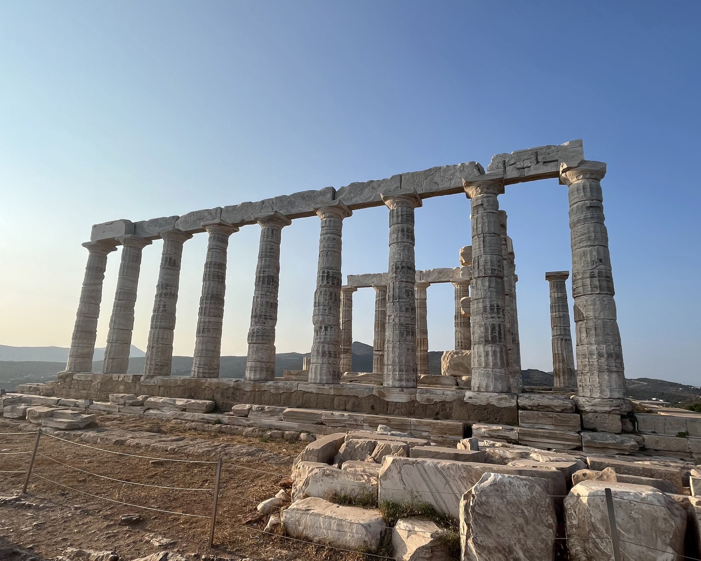
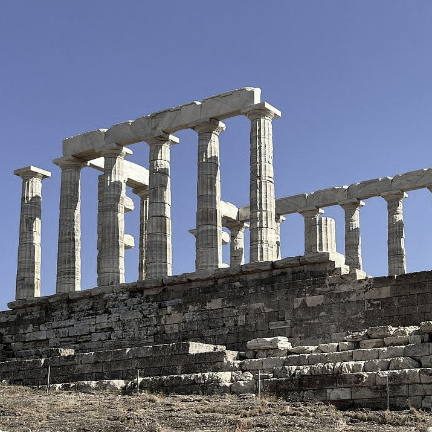
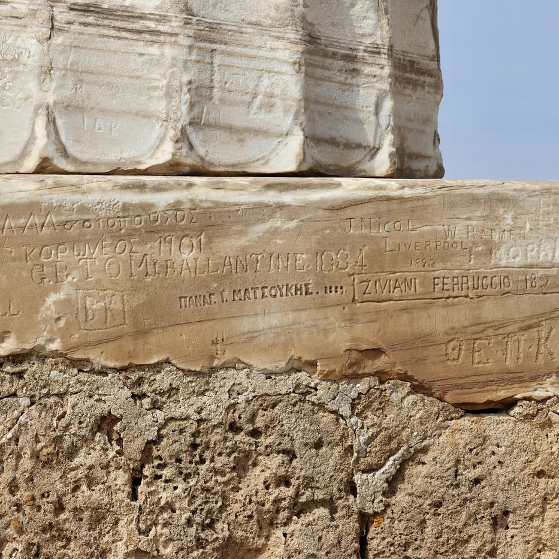
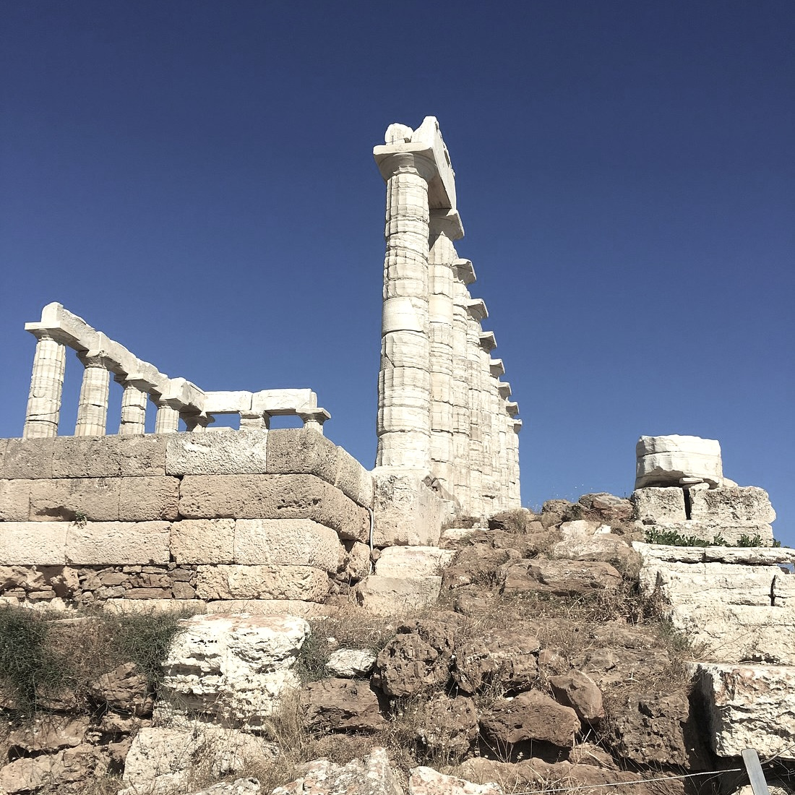
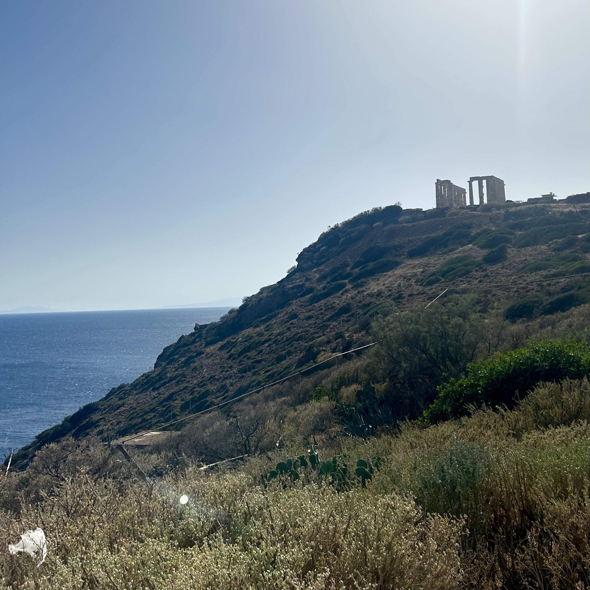

Watch the sun set over the Aegean at Sounion, beneath the ancient columns of Poseidon's Temple.

3-4 hours
Private Tour
Custom pick-up point




This memorable half-day trip from Athens takes you to Cape Sounion, located at the southernmost tip of the Attica Peninsula and one of the most stunning coastal destinations in Greece. Traveling along the scenic Athenian Riviera, you’ll visit the ancient Temple of Poseidon, dramatically perched on a cliff overlooking the Aegean Sea. Built in the 5th century BC, the temple honors Poseidon, god of the sea, and offers breathtaking panoramic views of the coastline and nearby islands. While exploring the site, fascinating stories about its history and mythology come to life, including the legend of King Aegeus and how the Aegean Sea got its name.
If timed for the late afternoon, the tour offers the chance to experience one of the most spectacular sunsets in Greece, as the sun sets behind the temple’s doric columns. Along the way, enjoy a relaxing drive through the Athens Riviera with an optional stop for coffee or refreshments by the sea or the Lake of Vouliagmeni.
Enjoy a scenic drive along the Athenian Riviera, with stunning coastal views and optional stops for refreshments.
Optionally stop at this natural thermal lake, surrounded by lush greenery, for a relaxing experience.
Arrive at the southernmost tip of the Attica Peninsula, offering breathtaking views of the Aegean Sea.
Explore this ancient temple dedicated to Poseidon, perched on a cliff overlooking the sea.
Experience one of the most spectacular sunsets in Greece, with the temple silhouetted against the sky.
Entrance fees to venues
Private licensed guide & Swim (optional)
If you have any questions or would like to book this tour, feel free to reach out:
Email: elisavetmakri@hotmail.com
Phone: +30 6942919085